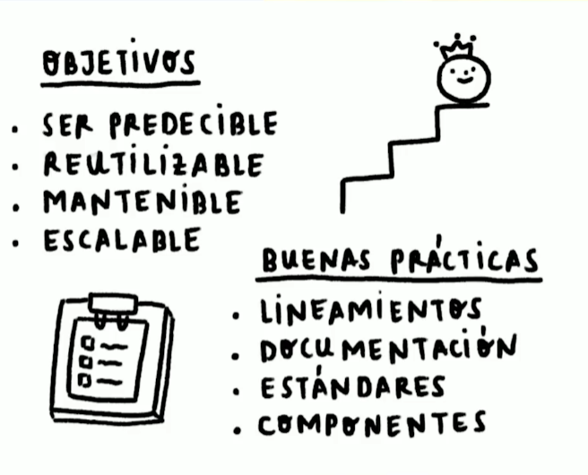

¿Qué son las arquitecturas CSS? ¿Para qué sirven?

¿Qué son y para qué nos sirven las arquitecturas CSS?
Sirven para mantener un orden y una coherencia durante todo el proyecto. Tiene los siguientes objetivos:
-Predecibles: escribir reglas claras.
-Reutilizable: no escribir código redundante.
-Mantenible: que sea fácil de leer y adaptable a los estándares.
-Escalable: que pueda crecer fácilmente sin afectar el rendimiento.
.
Estos objetivos se deben ver reflejadas en buenas practicas que debe conocer todo el equipo involucrado en el proyecto como:
-Establecer reglas
-Explicar la estructura base
-Establecer estándares de codificación
-Evitar largas hojas de estilo
-Documentación